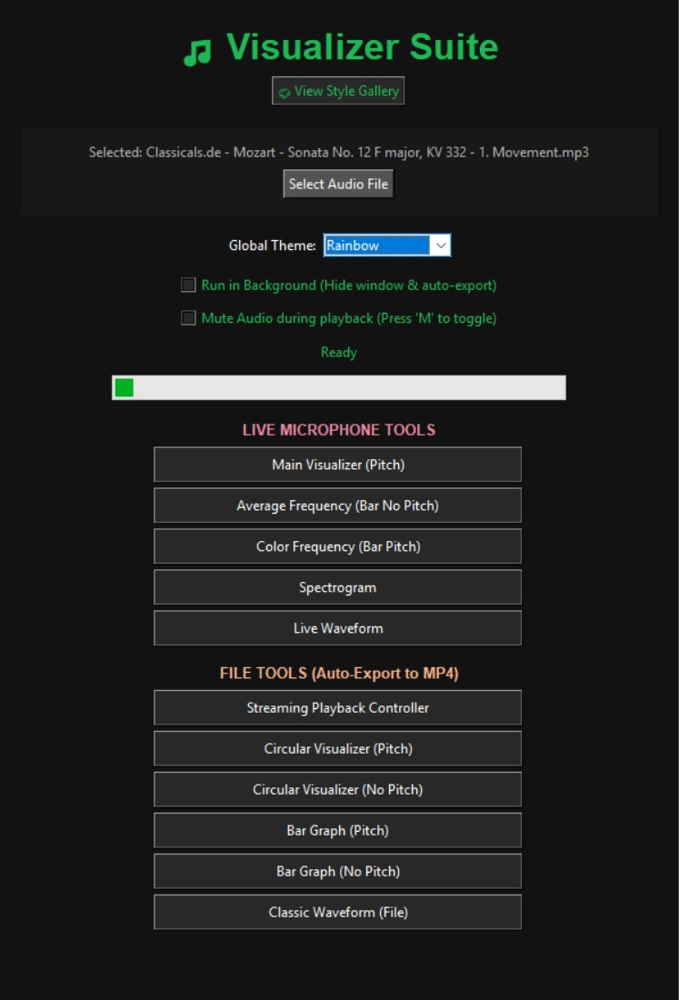

Welcome to the Visualizer Suite

A robust, multi-tool audio visualization suite originally built in Python. Whether you want to analyze live microphone input in real-time or export pre-recorded tracks as high-quality MP4 videos, our suite has you covered.
Explore our features, learn about the math behind the pitch detection, or try the web-adapted version of our tool right here in your browser!
Launch Web App Demo